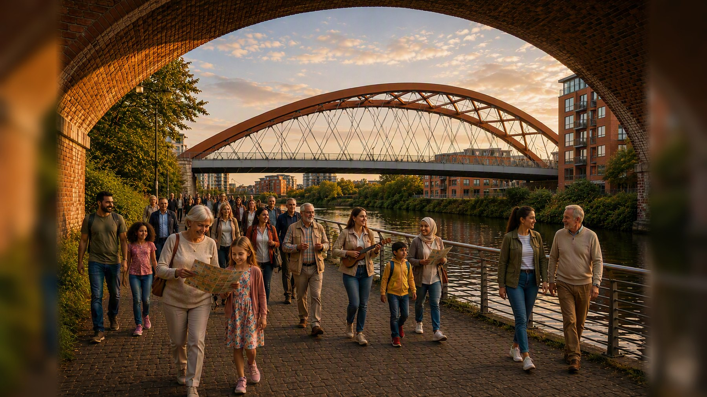
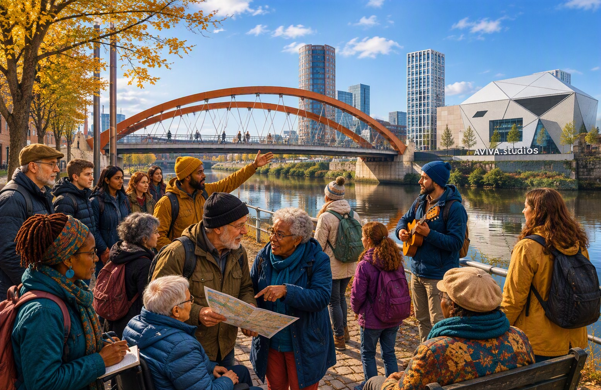

Families, friends and curious minds
Information for families
Find ticket ages, family pricing, supervision information and practical details before deciding whether Mancunianity Flows suits your group.
Adult: £15 · Senior aged 65 and over: £12 · Child or young person aged 3–17: £5 · Under three: free, but a free ticket must be booked · Access Companion: free, but a free ticket must be booked.
Family Bundle: £38 for two adults and two children or young people aged 3–17. Under-threes and Access Companions attend free, but a free ticket must still be booked for every person attending.
Meet at The Social, Aviva Studios, Water Street, Manchester M3 4JQ. Please arrive at The Social, Aviva Studios, from 10:00 am for the 10:30 am performance, or from 1:00 pm for the 1:30 pm performance. The 30-minute arrival period allows time for check-in and wireless headset collection. We recommend checking in no later than 10:25 am for the morning performance or 1:25 pm for the afternoon performance. The walking group leaves the meeting point when the performance starts at 10:30 am and 1:30 pm.
Bookings are securely processed through TryBooking. The booking page opens in a new tab.
Practical information for your group
- Adult supervision
- Anyone aged 17 or under must attend with a responsible adult aged 18 or over. Children and young people must remain with their accompanying adult throughout the experience. Accompanying adults are responsible for their supervision and safety.
- Activities and headsets
- Children receive a spotting activity. Wireless headsets are supplied and cleaned between uses; no app or personal audio equipment is needed.
- Route and duration
- The traffic-free pedestrian route is less than a quarter of a mile. The complete experience usually lasts about 65 minutes; allow up to 70 minutes, including the final 15-minute musical finale.
- Outdoor conditions and seating
- The experience continues in most weather. Bring warm, waterproof clothing and suitable footwear. Finale seating is on outdoor concrete seat blocks; a small waterproof cushion or folded sit mat may add comfort.
- Late arrival
- You may be able to catch up if you arrive after the performance starts, but joining the group and receiving a headset cannot be guaranteed. Follow directions from Mancunianity or Aviva Studios staff where available.
Pushchair suitability, child-sized headsets and family facilities have not been confirmed. Email contact@mancunianity.uk with questions before booking if these details affect your plans.
Planning for access needs?
Read the confirmed route and visitor information, including details that have not yet been confirmed.
Read the access and journey-planning guideExplore the Irwell together
Different generations notice different things
A bridge may prompt one person to think about engineering, another to notice a train and someone else to remember how the riverside used to look. The experience leaves room for those different observations.

